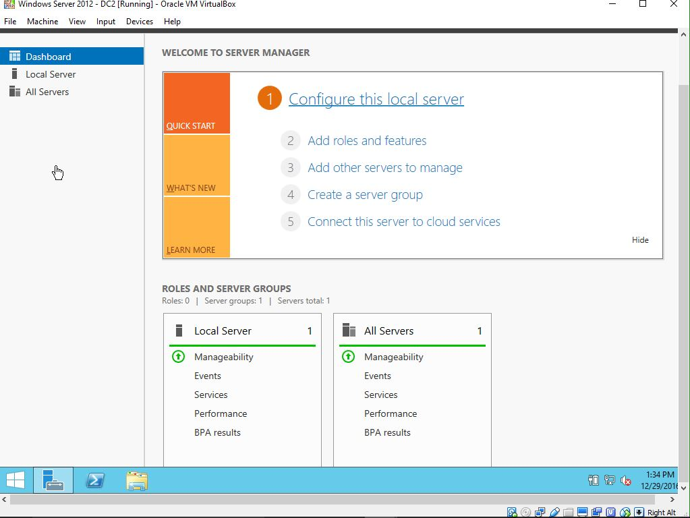
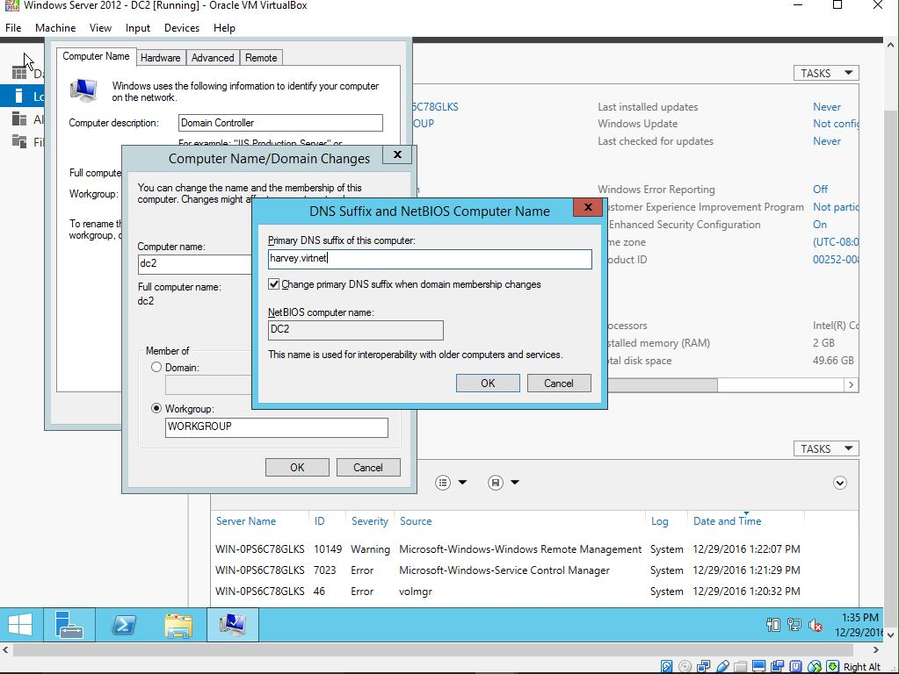
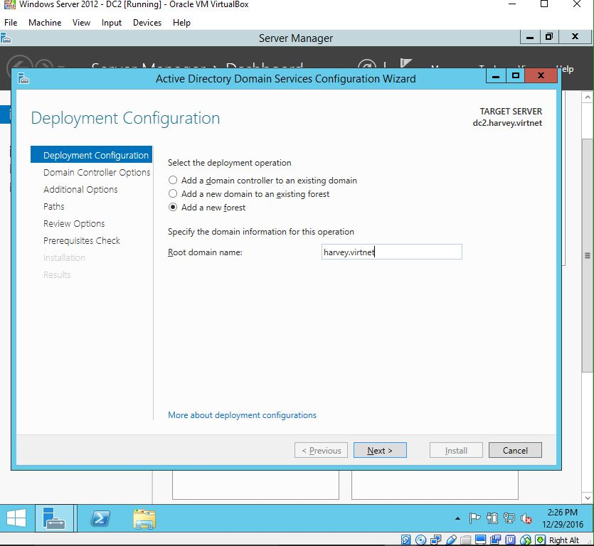
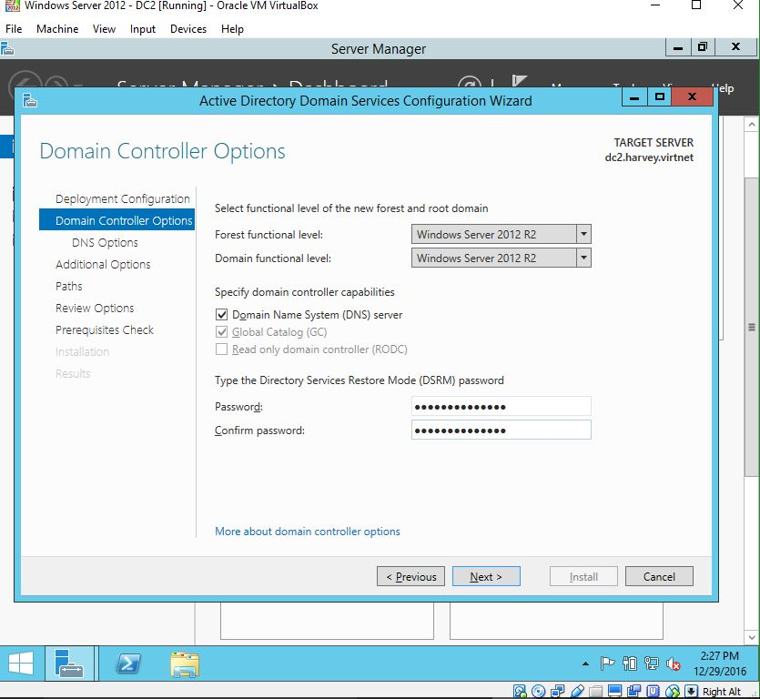
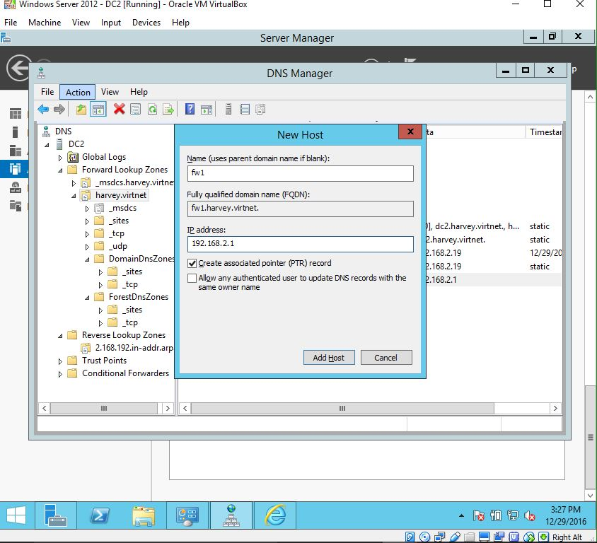

Windows Active Directory
Part 1 : Installing AD DS on Windows 2012 R2
Thanks to Microsoft Imagine (formerly DreamSpark), I have
downloaded the standard edition of Windows 2012 R2. I am
going to use this as a VM (when I have more funds I will use a
Datacenter edition of 2016 and promote it as the primary domain
controller [PDC]) to create a new forest with a new(ish) domain
of harvey.virtnet and use it on our virtual network. I
gave it a 50 GB hard drive, 2 GB of memory, and attached it to
the internal network. I had a previous experiment using a
dc1 so I will name this machine dc2.

Then restart. Set up a static IP address. Set up
Windows Update.
Now go to Add roles and features. Select Role-based or
Feature-based installation. Select dc2 or whatever you
named it. Then select Active Directory Domain Services.

Now go into Server Manager -> Tools -> DNS. In the
DNS Manager, select DC2 -> Forward Lookup Zones ->
harvey.virtnet. Then go to Action -> New Host (A or
AAA) and add pfSense (fw1)

In your pfSense, set the DNS Forwarder to Override the domain
harvey.virtnet for dc2's ip address.
You now have a Windows 2012 R2 Server running AD DS and
DNS. Next time, we'll join a CentOS 7 machine and add some
users.